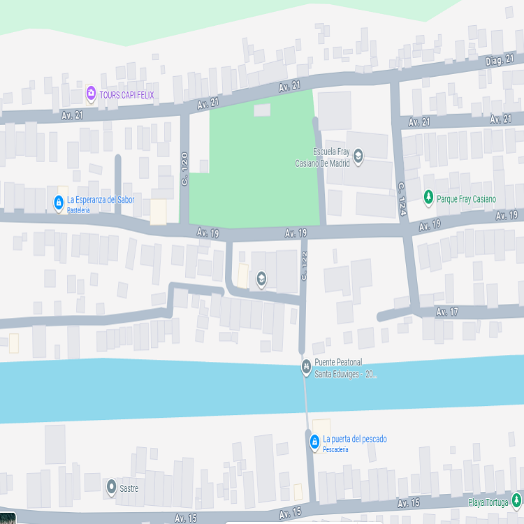

Portafolio

Hola, soy Yadir García. Un desarrollador backend junior con formación en Java y Spring Boot. Egresado del programa Oracle Next Education y con un diplomado en Informática por la UNED de Costa Rica, cuento con experiencia en la construcción de aplicaciones cliente-servidor en Java y Spring Boot, desarrollo de APIs REST, gestión de bases de datos SQL y aplicación de buenas prácticas de programación orientada a objetos. He trabajado en soluciones reales, como una agenda contable de escritorio, además de proyectos académicos con un enfoque práctico. Mi objetivo es integrarme al sector tecnológico, aportar con soluciones eficientes y escalables, y continuar desarrollándome profesionalmente en entornos de backend.
Primer título en Ingeniería Informática, con formación en programación, bases de datos y desarrollo en Java, C++ y C#. Proyecto final: sistema cliente-servidor en C# con SQL Server.
Certificación en Java y Spring Boot, con enfoque en bases de datos relacionales, desarrollo de APIs RESTful, Git/GitHub y metodologías ágiles. Incluye proyectos prácticos de backend para portafolio profesional.
Formación técnica en electrónica y redes, con énfasis en telecomunicaciones, cableado estructurado, configuración de redes LAN y sistemas eléctricos/electrónicos. Incluye certificaciones Cisco CCNA 1 e IT Essentials.
Responsable de cuentas y declaraciones de impuestos, con experiencia en conciliaciones, manejo de archivos contables y optimización de reportes en Excel. Desarrollé una aplicación de escritorio en Java Swing para centralizar datos de clientes y mejorar la eficiencia del equipo.
Encargado de mantenimiento automotriz, con experiencia en diagnóstico y reparación de sistemas electrónicos, escaneo con herramientas de diagnóstico, interpretación de códigos de error y solución de fallas eléctricas.
Colaboré en distribución y organización de productos a nivel nacional, desarrollando trabajo en equipo, atención al cliente y logística operativa.
